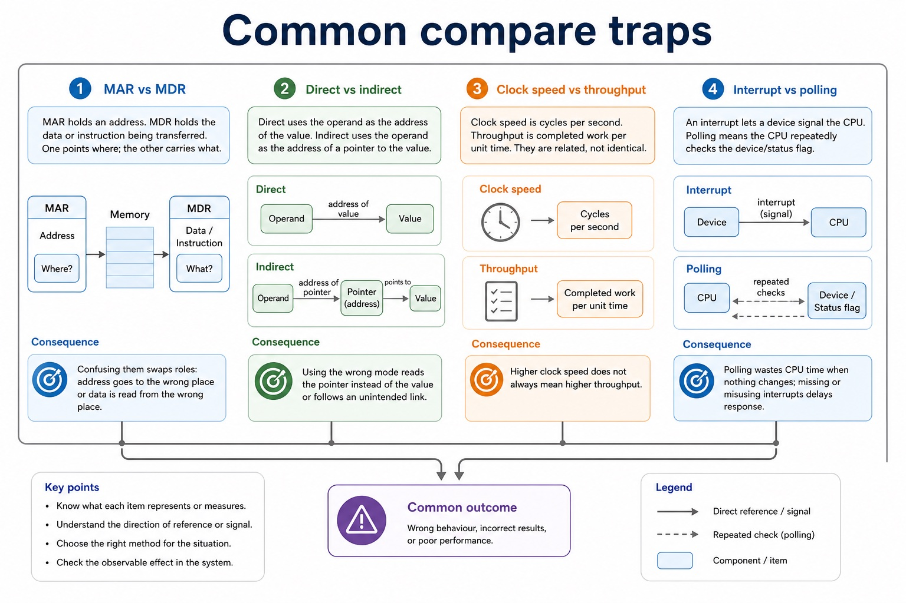
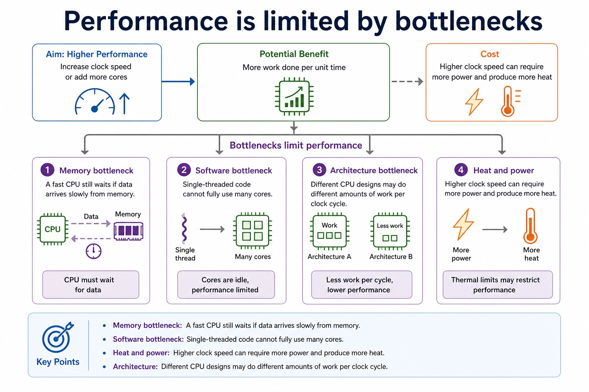
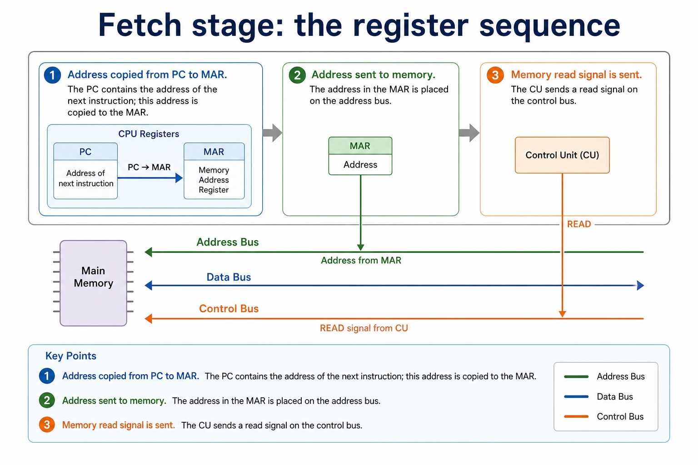
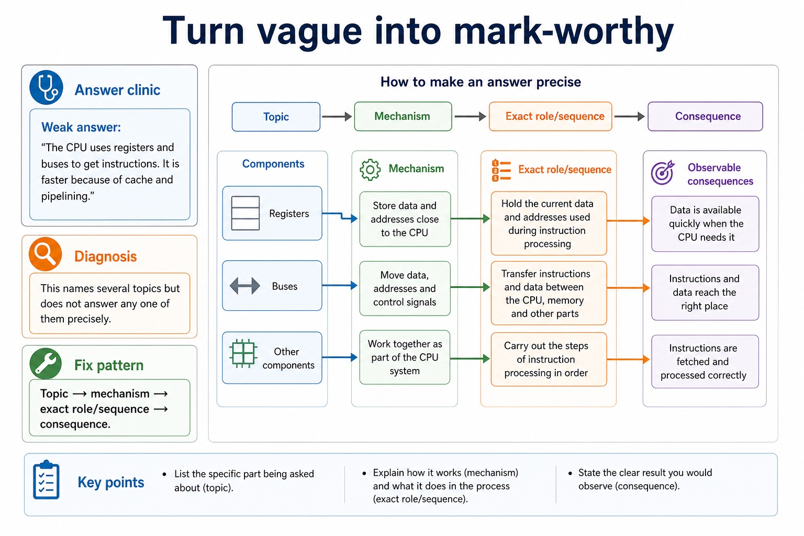
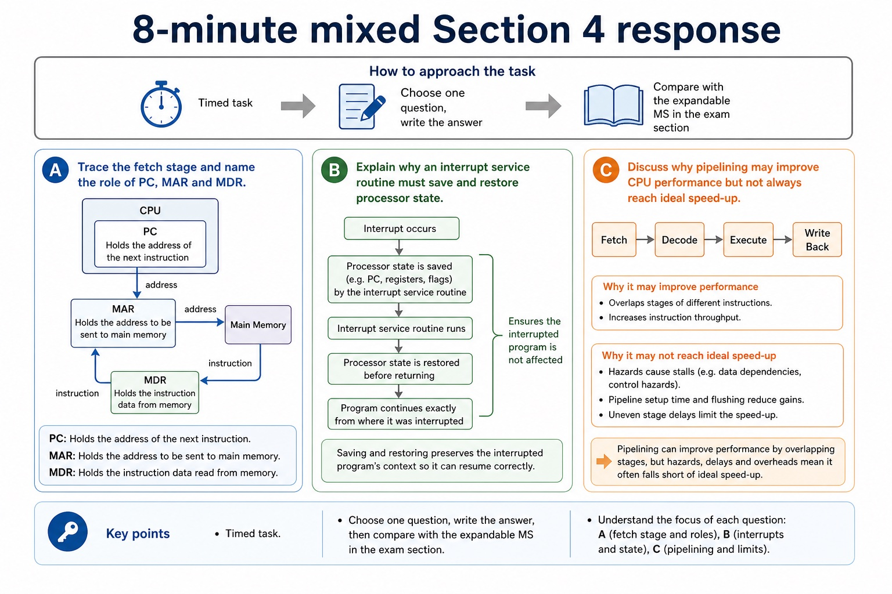

Cambridge AS9618 | Paper 1 | Section 4: Processor fundamentals
System buses, ports and processor performance
Flexible-depth lesson
S4.04, S4.05, S4.06 | Learn from the diagrams, test the method, then choose the practice you need.
Choose a Quick, Full or Deep route
Quick route
Use the diagnostic, learning objectives, first worked example and foundation question. Stop once the learner can explain the central distinction accurately.
Full route
Use every knowledge-point material set, the worked method, the terminology check and all questions.
Deep route
Add the prerequisite refresher, ask learners to connect the concept checklist, discuss the labelled extension and complete a transfer question without a model answer.
Part 1 | optional depth
Prerequisite knowledge and quick diagnostic
Recall S4.01 before starting this lesson.
Give one accurate definition or method step before continuing. If it is missing, revisit only that prerequisite.
Open optional prerequisite refresher
Show understanding of the basic Von Neumann model and the stored-program concept: instructions are stored in binary in the same directly accessible memory as data and are fetched for execution.
Understand Von Neumann architecture and the stored-program concept.
Part 2 | knowledge-point material sets
Learn each point through visuals
Follow the map, the three-part explanation and the concrete cue. Open precise wording only after the idea is clear.
Open the concept checklist and choose what to teach
address
data
control
buses
processor type
cores
bus width
clock
cache
USB
HDMI
VGA
ports
01
S4.04 · process
Address · Data · Control · Buses
Concept map
addressdatacontrolbuses
See how it works
StartShow how data are transferred between computer-system components using the address bus, data bus and control bus, including their directions and roles in read/write operations
ChangeThe control bus carries control and timing signals in both directions overall, including read/write signals from the CPU and interrupt or status signals toward it
CheckTo read address 240, the CPU puts 240 on the address bus and read on the control bus
S4.04 diagrams
1 / 4
01
Process · 1 of 4
Decode and execute are not filler words
Open text transcript
The control unit interprets the instruction in the CIR. It identifies the opcode, decides what operation is required, and identifies any operands or addresses needed.
Execute: arithmetic or logic
If the instruction is arithmetic or logical, the ALU performs the operation and a result may be stored in a register.
Execute: memory access
If the instruction needs data from memory, the CPU uses buses and registers to read from or write to the required memory address.
Execute: branch
If the instruction is a branch/jump, the PC may be changed to a different address rather than just continuing with the next instruction.
Common error
02
Concrete example · 2 of 4
Read and write traces
Open text transcript
Memory read
CPU places the required address on the address bus.
CPU sends a read signal on the control bus.
Memory places the requested data/instruction on the data bus.
CPU receives the data, often through the MDR.
Memory write
CPU places the target address on the address bus.
CPU places the data to be stored on the data bus.
03
Comparison · 3 of 4
Common compare traps

Open text transcript
MAR vs MDR
MAR holds an address. MDR holds the data or instruction being transferred. One points where; the other carries what.
Direct vs indirect
Direct uses the operand as the address of the value. Indirect uses the operand as the address of a pointer to the value.
Clock speed vs throughput
Clock speed is cycles per second. Throughput is completed work per unit time. They are related, not identical.
Interrupt vs polling
An interrupt lets a device signal the CPU. Polling means the CPU repeatedly checks the device/status flag.
04
Analogy / use · 4 of 4
Why control and calculation are separate
Open text transcript
The control unit decodes what the instruction demands.
It sends signals that select data movement and an ALU operation.
The ALU returns a result and status information.
Open precise syllabus wording
Understand address, data and control buses.
Show how data are transferred between computer-system components using the address bus, data bus and control bus, including their directions and roles in read/write operations.
02
S4.05 · process
Processor type · Cores · Bus width · Clock
Concept map
processor typecoresbus widthclockcache
See how it works
StartShow how processor type and number of cores, bus width, clock speed and cache memory can contribute to performance
Changeno single factor guarantees faster execution for every workload
CheckA lightly threaded office program may favour A's processor type, clock behaviour and cache, while a parallel workload written for B's processor type may use more…
S4.05 diagrams
1 / 4
01
Process · 1 of 4
The official processor performance factors
Open text transcript
The official performance factors are processor type and number of cores, bus width, clock speed and cache memory.
Processor type affects how much useful work can be completed for a workload, while more cores help only when work can run in parallel.
A wider bus transfers more bits per transfer; a higher clock speed provides more cycles per second; cache reduces slower main-memory accesses when required data or instructions are present.
No single factor guarantees that one computer will be faster for every program.
02
Comparison · 2 of 4
Bus width and addressable locations
Open text transcript
Address bus width
If the address bus has n lines, it can represent 2^n different addresses.
A 16-bit address bus can address 2^16 = 65,536 memory locations.
Data bus width
A wider data bus can transfer more bits at once, which can affect throughput.
Precision
Address bus width affects address range; data bus width affects transfer size.
03
Process · 3 of 4
Performance is limited by bottlenecks

Open text transcript
Memory bottleneck A fast CPU still waits if data arrives slowly from memory.
Software bottleneck Single-threaded code cannot fully use many cores.
Heat and power Higher clock speed can require more power and produce more heat.
Architecture Different CPU designs may do different amounts of work per clock cycle.
04
Diagram · 4 of 4
How registers, buses and clock stay aligned
Open text transcript
Registers expose small values needed immediately.
Buses carry values, addresses and control signals on distinct paths.
Clock events determine when components may capture a new state.
Open precise syllabus wording
Understand processor performance factors: processor type, cores, bus width, clock and cache.
Show how processor type and number of cores, bus width, clock speed and cache memory can contribute to performance; no single factor guarantees faster execution for every workload.
03
S4.06 · concept
USB · HDMI · VGA · Ports
Concept map
USBHDMIVGAports
See how it works
MeaningUnderstand how ports connect peripheral devices, including Universal Serial Bus (USB), High Definition Multimedia Interface (HDMI) and Video Graphics Array (VGA), with accurate signal/use distinctions
MechanismUSB is a general serial interface carrying digital data and often power for peripherals
ConsequencePort choice must match the peripheral and signal rather than rely on a claim that one connector is always best
Open precise syllabus wording
Understand USB, HDMI and VGA ports.
Understand how ports connect peripheral devices, including Universal Serial Bus (USB), High Definition Multimedia Interface (HDMI) and Video Graphics Array (VGA), with accurate signal/use distinctions.
Supporting diagram library
1 / 8
01
Diagram · 1 of 8
The cycle in one clean sentence
Open text transcript
The CPU gets the next instruction from main memory using the address stored in the PC.
The CU interprets the instruction in the CIR and identifies the operation and any operands needed.
The CPU carries out the instruction, for example using the ALU, accessing memory, or changing the PC.
02
Diagram · 2 of 8
Trace one instruction through the fetch stage
Open text transcript
Copy the next-instruction address from PC to MAR and read the instruction from memory into MDR.
Move the fetched instruction from MDR to CIR.
Increment PC independently so that PC points to the next instruction.
PC does not feed CIR; only the instruction held in MDR is transferred to CIR.
03
Diagram · 3 of 8
Fetch stage: the register sequence

Open text transcript
This is the part students must be able to trace precisely.
Register / bus focus
Exam-safe wording
Address copied from PC to MAR.
PC - MAR
The PC contains the address of the next instruction; this address is copied to the MAR.
Address sent to memory.
Address bus
04
Diagram · 4 of 8
The four fetch-stage names you cannot blur together
Open text transcript
Register roles
PC Program Counter: stores the address of the next instruction to be fetched.
MAR Memory Address Register: stores the address of the memory location being accessed.
MDR Memory Data Register: stores data or an instruction being transferred to or from memory.
CIR Current Instruction Register: stores the instruction currently being decoded/executed.
05
Diagram · 5 of 8
Turn vague into mark-worthy

Open text transcript
Answer clinic
Weak answer: "The CPU uses registers and buses to get instructions. It is faster because of cache and pipelining."
Diagnosis: This names several topics but does not answer any one of them precisely.
Fetch copies PC to MAR, reads memory into MDR, copies MDR to CIR and increments PC.
Decode begins after CIR holds the current instruction; the control unit interprets its opcode and operands.
The address in MAR does not flow into MDR; memory returns the addressed instruction or data into MDR.
07
Diagram · 7 of 8
Retrieval grid: say the role, not just the name
Open text transcript
PC holds the address of the next instruction; MAR holds the memory address being accessed.
The address bus carries addresses between the processor and memory.
MDR holds data or instructions transferred through the data bus.
CIR holds the current instruction while it is decoded and executed.
The control bus carries control and timing signals such as read, write and interrupt.
08
Diagram · 8 of 8
8-minute mixed Section 4 response

Open text transcript
Timed task
Choose one question, write the answer, then compare with the expandable MS in the exam section.
Question A Trace the fetch stage and name the role of PC, MAR and MDR.
Question B Explain why an interrupt service routine must save and restore processor state.
Question C Discuss why pipelining may improve CPU performance but not always reach ideal speed-up.
Apply the idea
Worked method
01Read memory, then connect a display
02Compare two processors for two workloads
03To read address 240, the CPU puts 240 on the address bus and read on the control bus; memory returns the contents on the data bus.
04To connect the computer to a modern TV with one digital audio/video cable, choose HDMI.
05A keyboard or removable drive commonly uses USB, while a legacy analogue display may use VGA.
06Processor A has four faster general-purpose cores and a larger cache; Processor B has eight specialised cores but a lower clock speed.
Open precise terminology and exam facts
Show how data are transferred between computer-system components using the address bus, data bus and control bus, including their directions and roles in read/write operations.
Show how processor type and number of cores, bus width, clock speed and cache memory can contribute to performance; no single factor guarantees faster execution for every workload.
Understand how ports connect peripheral devices, including Universal Serial Bus (USB), High Definition Multimedia Interface (HDMI) and Video Graphics Array (VGA), with accurate signal/use distinctions.
The address bus carries the address of the memory or I/O location being accessed and is normally directed from the processor. The data bus carries data and instructions in either direction. The control bus carries control and timing signals in both directions overall, including read/write signals from the CPU and interrupt or status signals toward it.
A memory read uses all three buses: the CPU places the required address on the address bus, sends a read signal on the control bus, and memory returns the requested data or instruction on the data bus. A bus transfers signals; it does not permanently store them.
USB is a general serial interface carrying digital data and often power for peripherals. HDMI carries digital video and audio. VGA carries analogue video and does not carry audio in the standard VGA signal. Port choice must match the peripheral and signal rather than rely on a claim that one connector is always best.
Processor performance depends on processor type, number of cores, bus width, clock speed and cache memory. Processor type means the processor architecture and instruction-set design, including how much useful work its execution units can perform for a particular instruction or workload; a clock-rate comparison alone is therefore not sufficient.
More cores can execute independent threads concurrently when software exposes parallel work. Wider data buses can transfer more bits per transfer, while address-bus width affects the address space. Higher clock speed provides more clock cycles per second, and cache reduces waiting when frequently used instructions or data are found close to the CPU.
No factor guarantees that every program runs faster. Performance must be justified for the stated workload, because software parallelism, instruction-set compatibility, cache behaviour, memory traffic, heat and other bottlenecks can limit the benefit.
Beyond syllabus / 延伸知识（不要求背诵）
modern processors add pipelining and several cache levels, but exam answers should begin with the syllabus processor model.
Part 3 | select by learner need
Practice by question type
describeexplainfoundation8 marks
Question 1. Describe a memory read using the address, data and control buses, then choose USB, HDMI or VGA for one stated peripheral connection. Two computers have different processor types. Explain how processor type, number of cores, bus width, clock speed and cache can affect their performance for a stated workload.
Show answer and marking guidance
Answer: address bus carries the required memory/I/O address; control bus carries the read signal; data bus returns the requested data/instruction; USB matched to a suitable digital peripheral/data/power use; HDMI matched to digital video and audio; VGA matched to analogue video without standard audio; processor type linked to architecture/instruction-set/execution design and workload; cores linked to available parallel threads/tasks; bus width linked accurately to bits transferred or address space; clock speed linked to cycles per second; cache linked to reducing slower main-memory access; conclusion recognises workload and bottlenecks rather than claiming one factor guarantees speed
Marking guidance: Do not swap the address and data buses or claim that VGA normally carries digital audio. Do not accept processor type as only a brand name, or claim that the highest clock speed or largest core count always wins.
Common error: For the command word describe, perform that exact action; do not replace it with an unrelated fact.
applyrecallapplication2 marks
Question 2. What does processor type mean as a performance factor?
Show answer and marking guidance
Answer: The processor architecture/instruction-set and execution design, which determines what work it can perform per instruction or for a particular workload.
Marking guidance: Award one mark for each distinct, technically accurate point or method step.
Common error: Do not repeat the same point in different words; each mark needs a separate idea or method step.
explainexplaintransfer2 marks
Question 3. How can bus width affect performance?
Show answer and marking guidance
Answer: A wider data bus can transfer more bits per transfer; address-bus width affects the address space rather than directly guaranteeing speed.
Marking guidance: Award one mark for each distinct, technically accurate point or method step.
Common error: Do not copy the worked example unchanged; transfer the method and check it against the new context.
Related past-paper indexes
Reference
Marks
Command word
Question type
9618/13/S/25 Q2(c)
2
describe
explain
9618/13/S/25 Q2(i)
2
explain
explain
9618/12/W/24 Q3(b)
4
complete
recall
9618/12/W/24 Q3(c)
4
complete
recall
Index only: Cambridge question and mark-scheme wording is not reproduced on this public course page.
Part 4 | close when ready
Summary and exam reminders
Summary
Define system buses, ports and processor performance with the exact technical vocabulary expected by the syllabus.
Use the lesson method on a fresh context and show the intermediate decision, representation or calculation.
Match the shape of the answer to the command word and the available marks.
Check the final answer against the scenario instead of repeating a memorised sentence.
Common error to correct
Students often memorise register names without roles. Correction: a register earns its name by what it temporarily holds.
Exam technique
Follow the command word: state gives a fact; explain links a cause to a consequence; compare covers both sides.
Match the number of independent points or method steps to the available marks.
For system buses, ports and processor performance, use the exact technical term before applying it to the scenario.